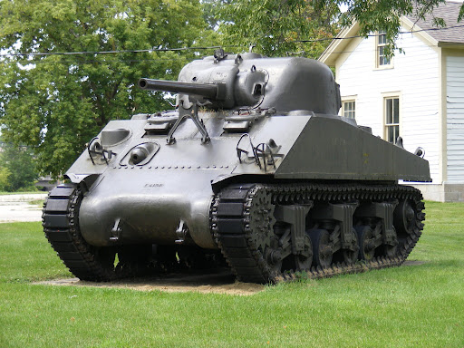

M4 Sherman
Informacije o vozilu:
| Specifikacija | Detalji |
|---|---|
| Naziv | M4 Medium "Sherman" |
| Tip | Srednji tenk (30,3 tone) |
| Uveden u uporabu | 1942. godine |
| Naoružanje | 75 mm top, 2x 7,62 mm i 1x 12,7 mm strojnica |
| Oklop | 76 mm maksimalno |
| Brzina | 38,5 km/h |
| Posada | 5 članova |
Zbog lake zapaljivosti, američki vojnici su Shermanu koji je bio njihov glavni tenk dali nadimak upaljač po tada popularnoj reklami za upaljač koja je glasila: "upali iz prve prvi i svaki sljedeći put". Nijemci su mu dali nadimak "Peć za Tommyija". Istiniti nadimak s kojom bi se obje strane složile je onaj koji se počeo upotrebljavat nakon rata. On glasi "smrtonosna klopka". Razlog za to je bila njegova greška u konstrukciji koja bi dovodila do zapaljenja streljiva koje nije bilo zaštićeno u mokrim spremnicima (spremnici za streljivo okruženi vodom) što je rezultiralo u zapaljenju na 60% pogođenih tenkova. S uvođenjem mokrih spremnika isprava drastična pada broj zapaljenja na samo 10%, ali zbog odluke da se radi laše logistike u tenkove stavlja dodatno streljivo izvan mokrih spremnika postotak ponovno raste.
M4 Sherman na bojištu u Europi